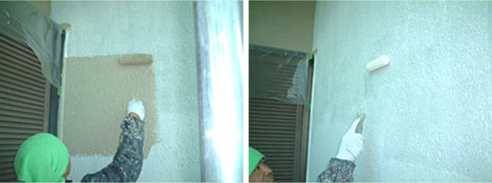

施工の流れ Paint flow
-
お問い合わせ
メールやお電話・FAXからご相談いただけます。どんなに小さな塗装でもお気軽にご相談ください。
-
現地調査
指定された日にお伺いします。お客様立ち合いのもと、外壁や屋根の診断をさせていただきます。
-
現地調査
指定された日にお伺いします。お客様立ち合いのもと、外壁や屋根の診断をさせていただきます。
-
お見積もり
お客様のご希望をお伺いし、予算や工期を考慮した上でお見積りさせて頂きます。
※ここまでは無料です。小出塗装ではしつこい電話や営業は一切行っておりません。
-
ご契約
簡単な契約書を交わします。工期や塗料・工法・色彩についてきちんとお打ち合わせをいたします。
-
近隣へのご挨拶
着工から数日前に工事開始のご案内をさせていただきます。
予定工期や工程内容など、近隣の皆様へ不安を与えないようご説明もいたします。
-
工事着工
塗替えの流れは塗替え現場ドキュメントをご覧ください。
塗替え現場ドキュメント Painting field flow
-
足場架設・養生
足場を組んで安全な現場を作り、飛散防止ネットで養生します。
- 【Q】養生ってなんですか？
-
【A】塗料が飛び散らないようにシートを 被せることです。
植木や車・門扉などにも細心の注意を払います。
-
水洗・下地補修／調整
洗浄機などで、ホコリ・汚れ・藻・コケ・カビなどを洗い流し清浄な面にします。外壁の不具合箇所を適切な工具を用いてケレン除去したあとシーリング処理し、欠損箇所は修製剤を用いて補修します。
- 【Q】下地補修では何をしますか？
-
【A】汚れをキレイに洗い流したあとにひび割れを埋めたりして表面を美しく整えます。
この作業の出来が、後の仕上がりに大いに影響します。
-
外壁塗装
 外壁を下塗り・中塗り・上塗りの順で塗装します。
- 【Q】イヤなにおいはしませんか？
- 【A】水性塗料を使用の場合はシンナーなどを用いませんので、イヤなにおいが無く取扱いも安全で人と環境に優しいです。
-
屋根塗装
風雨・紫外線対策として充分な下地調整をした後、特に耐候性に優れた塗料で塗装します。
- 【Q】屋根の塗料は違うのですか？
- 【A】最も過酷な自然条件にさらされる箇所ですから、上塗りには特に耐候性の優れた塗料を使用します。
-
鉄部・木部塗装
破風板・軒天をケレン・清掃後下塗りします。その後、破風板・軒天・スチール箇所の仕上げ塗装をします。
- 【Q】鉄部や木部では何に注意しますか？
-
【A】ベランダの手すり等の鉄部は、旧塗装膜のはがれ・さびへの対応をします。
また、木部は割れや腐食の防止に重点を置きます。
-
足場解体
周囲の安全に留意し足場、飛散防止ネットの撤去作業をおこないます。
- 【Q】雨の日も作業しますか？
-
【A】申し訳ありません。雨の日の作業はお休みです。
従って、天候によっては作業日程に変更が出る場合もあります。
-
点検・引き渡し
塗装面をチェックし必要があれば手直しして、塗装作業を終了。 周辺を清掃します。
- 【Q】後片づけもしてもらえるのですか？
- 【A】もちろんです。撤去作業の後に周辺の清掃を行い、ゴミも施工店が持ち帰ります。